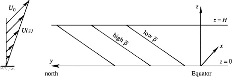

The existence of planet-encircling weather waves is explained by the fact that small perturbations can spontaneously grow when superposed on an eastward current maintained by sloping density surfaces.
The perturbations extract their energy from the potential energy stored in the system of sloping density surfaces. The energetics of the baroclinic instability are therefore quite different than those of the Kelvin-Helmholtz instability
The energetics of baroclinic instability can be studied using the equation for perturbation kinetic energy $$ \frac{d}{dt} \left( \rho_0 \int (u'^2 + v'^2) \, dx \, dy \, dz \right) = \frac{dKE}{dt} = -g \int w' \rho' \, dx \, dy \, dz $$ For instability, $dKE/dt > 0$, which requires $$ \int w' \rho' \, dx \, dy \, dz < 0 $$ Denote the volume average as $\overline{w'\rho'}$. A negative $\overline{w'\rho'}$ means lighter fluid rises and heavier fluid sinks, lowering the system’s potential energy.
◀ ▶